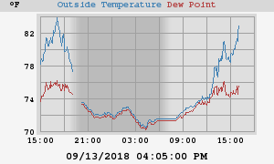
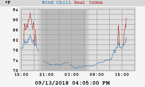
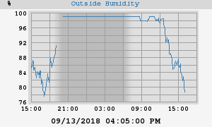
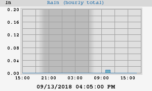
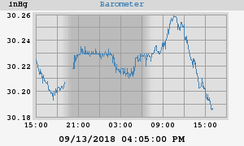
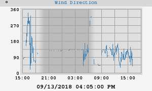
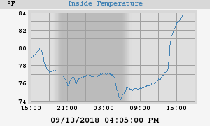
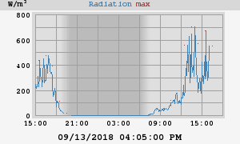

About this weather station:
| Latitude: | 38° 26.67' N |
| Longitude: | 077° 35.44' W |
| Altitude: | 377 feet |
This station uses a observer, controlled by 'weewx', an experimental weather software system written in Python. Weewx was designed to be simple, fast, and easy to understand by leveraging modern software concepts.
Weewx uptime: 0 days, 19 hours, 54 minutes
Server uptime: 0 days, 20 hours, 12 minutes
weewx v3.8.2
Today's Almanac
| Sunrise: | 06:50:22 AM |
| Sunset: | 07:22:04 PM |
| Moon Phase: | Waxing crescent (9% full) |







